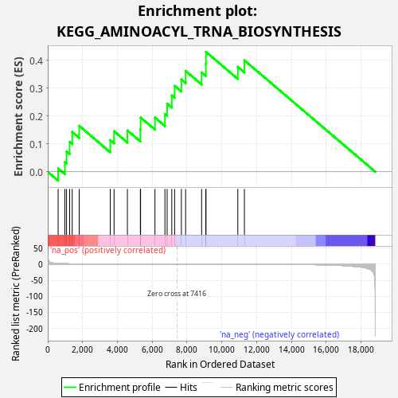
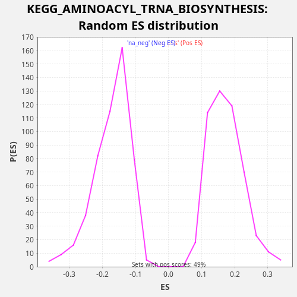

| Dataset | TCGA |
| Phenotype | NoPhenotypeAvailable |
| Upregulated in class | na_pos |
| GeneSet | KEGG_AMINOACYL_TRNA_BIOSYNTHESIS |
| Enrichment Score (ES) | 0.43057474 |
| Normalized Enrichment Score (NES) | 2.4865716 |
| Nominal p-value | 0.0 |
| FDR q-value | 0.00314525 |
| FWER p-Value | 0.02 |

| SYMBOL | RANK IN GENE LIST | RANK METRIC SCORE | RUNNING ES | CORE ENRICHMENT | |
|---|---|---|---|---|---|
| 1 | HARS2 | 596 | 2.273 | 0.0118 | Yes |
| 2 | MTFMT | 984 | 1.386 | 0.0347 | Yes |
| 3 | PSTK | 1079 | 1.237 | 0.0731 | Yes |
| 4 | QARS1 | 1258 | 1.004 | 0.1071 | Yes |
| 5 | SEPSECS | 1405 | 0.884 | 0.1429 | Yes |
| 6 | MARS2 | 1807 | 0.619 | 0.1650 | Yes |
| 7 | YARS2 | 3593 | 0.144 | 0.1135 | Yes |
| 8 | RARS2 | 3810 | 0.120 | 0.1455 | Yes |
| 9 | SARS2 | 4576 | 0.061 | 0.1483 | Yes |
| 10 | VARS2 | 5321 | 0.026 | 0.1522 | Yes |
| 11 | IARS2 | 5334 | 0.025 | 0.1950 | Yes |
| 12 | CARS2 | 6160 | 0.008 | 0.1946 | Yes |
| 13 | NARS2 | 6732 | 0.002 | 0.2077 | Yes |
| 14 | AARS2 | 6859 | 0.001 | 0.2444 | Yes |
| 15 | WARS2 | 7127 | 0.000 | 0.2737 | Yes |
| 16 | EARS2 | 7289 | 0.000 | 0.3086 | Yes |
| 17 | TARS2 | 7678 | -0.000 | 0.3315 | Yes |
| 18 | FARSB | 7921 | -0.001 | 0.3621 | Yes |
| 19 | LARS2 | 8840 | -0.010 | 0.3567 | Yes |
| 20 | FARSA | 9084 | -0.015 | 0.3873 | Yes |
| 21 | PARS2 | 9088 | -0.015 | 0.4306 | Yes |
| 22 | FARS2 | 10920 | -0.086 | 0.3766 | No |
| 23 | DARS2 | 11299 | -0.111 | 0.4000 | No |

{kind=link}
{kind=link}